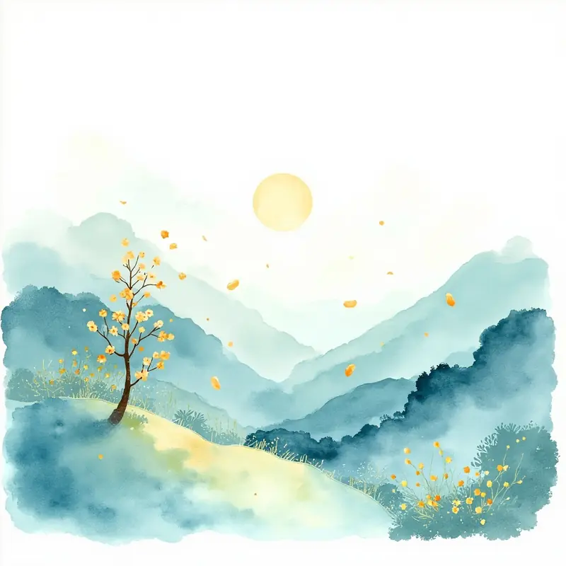
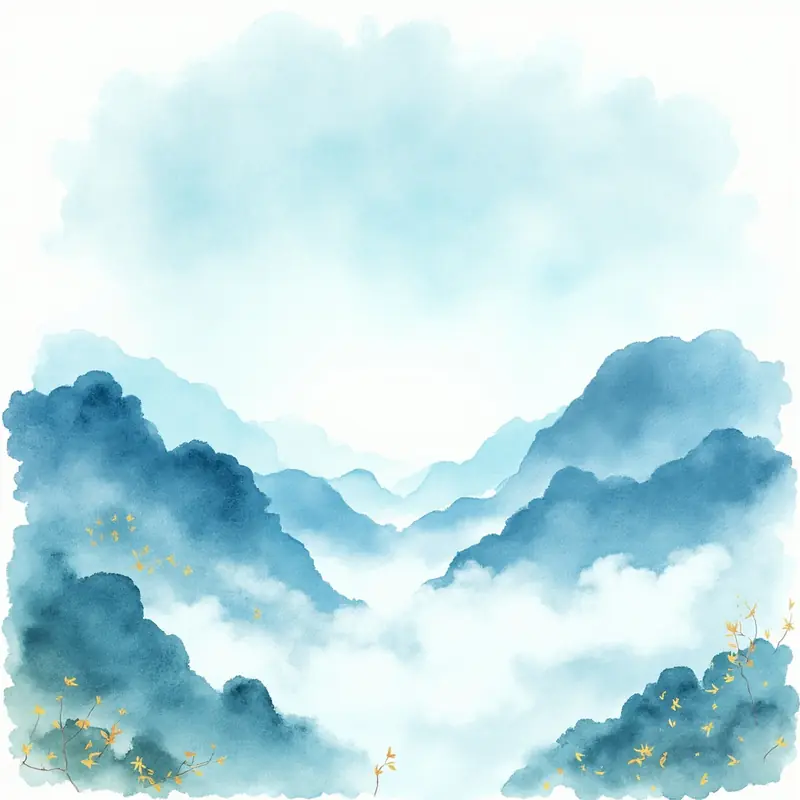
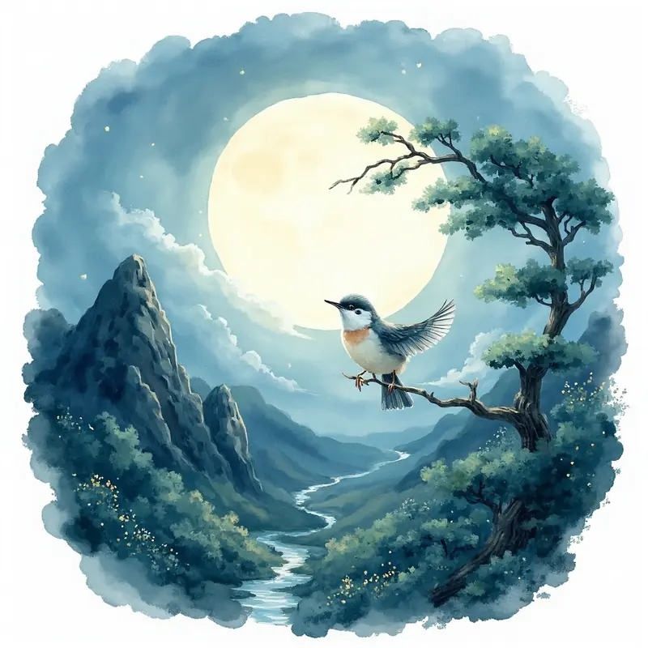
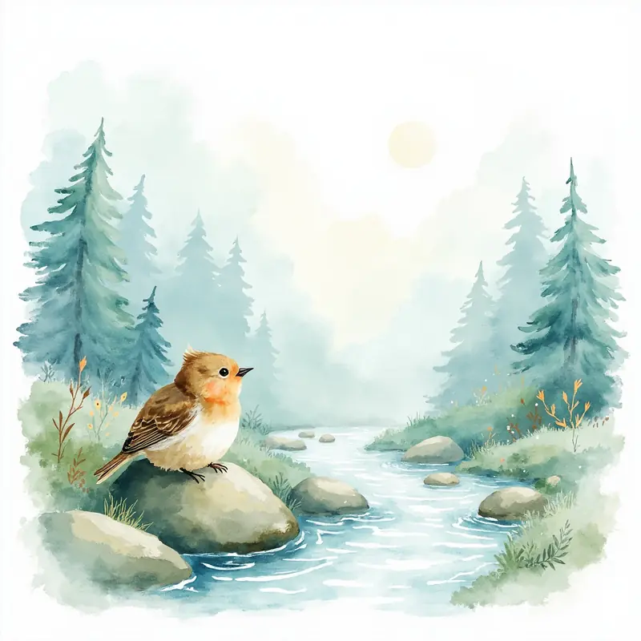

第 1 句山里的人很悠闲，连桂花悄悄地掉下来都能听得到。

第 2 句夜晚的山谷安安静静、空空荡荡，好像整个世界都睡着了。

第 3 句月亮悄悄升起来，把正在睡觉的山鸟惊醒了。

第 4 句小鸟时不时地在山涧里叽叽喳喳地叫几声，然后又安静了。
很久很久以前，唐代有一个特别会写诗的人，他的名字叫王维。他不光会写诗，还会画画，弹琴也弹得特别好，所以人们都叫他「诗佛」。 有一天晚上，王维一个人住在山里。那是一个春天的夜晚，山谷里什么声音都没有，安安静静的。他坐在桂花树旁边，看见一片片小小的金色桂花慢慢飘落下来。月亮悄悄地爬上了山头，把银白色的月光洒满了整个山谷。 这时候，正在树枝上睡觉的一只小鸟被突然亮起来的月光吓了一跳，扑棱一下飞了起来，在山涧里叽叽喳喳叫了几声。叫完之后，山谷又回到了原来安安静静的样子。 王维觉得这个画面太美了，于是就写下了这首《鸟鸣涧》。整首诗最有趣的地方是：明明是写鸟叫，但读起来却让人觉得山谷特别特别安静。因为越安静的地方，一点小声音才听得越清楚呀。
桂花是一种小小的花，颜色金黄金黄的，开在秋天。但是王维写的这首《鸟鸣涧》是春天夜晚的桂花，所以这里的「桂花」可能是一种春天也开的小花，或者只是诗人想象的画面哦。
小鸟本来在黑黑的夜里睡觉，眼睛已经习惯了。突然月亮升起来，明亮的月光一下子照进山谷，对小鸟来说就像突然开了灯，所以会被吓一跳呀。
王维写鸟叫，其实是在说山谷特别安静。这种「写一个声音来反衬安静」的方法，叫「以动衬静」。就像你在特别安静的房间里，会听到自己的心跳声一样。